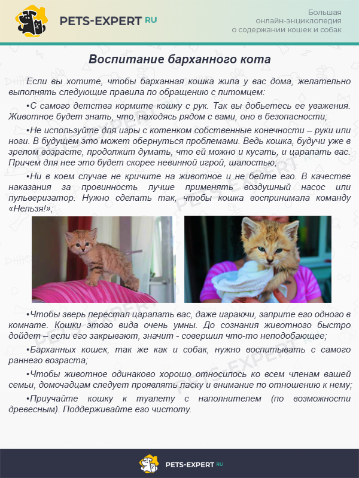

Онцилла: содержание и уход
Кошка онцилла дикое, но достаточно успешно приручаемое животное. В квартире, конечно, такая диковинка жить не сможет, но вот в большом доме онциллу можно держать достаточно успешно. Характер у зверька никогда не станет «сахарным», но принимая дикие повадки и обеспечив достаточной территорией и уходом можно содержать тигровую кошку в доме.
Идеальным местом содержания онциллы в доме считается сетчатый большой вольер, в котором должны быть всевозможные лесенка-лазалки, дерево с широкой кроной, домики и полочки.
Что касается корма, то тут полудикую кошечку можно кормить только сырым мясом телятины, но лучше всего покупать специальных жирненьких крыс, мышей, кроликов и птенцов. «Добычу» запускают в вольер раз в сутки, желательно вечером, чтобы соблюсти природные привычки.
Отличительная черта вида – до года онцилла просто душечка, котёнок играет и живёт вместе с хозяином как обычная кошка, но как только процесс полового созревания завершается – дикие привычки возвращаются и тогда жить такой котик может только в вольере. В условиях правильного питания и комфортного содержания в неволе онцилла живёт обычно до 20 лет.
В неволе онцилла не требует особенного ухода — её не нужно купать, так как она самостоятельно заботится о своей шубке. Если кошка доверяет человеку, её можно вычёсывать примерно 2 раза в месяц. Кормить онциллу можно только нежирным сырым мясом — птицей, крольчатиной и т.д. Также необходимо поддерживать вольер кошки в идеальной чистоте. Крепкое здоровье онциллы может пошатнуть непривычный климат, поэтому её нужно регулярно осматривать. Ей необходимо проставить все прививки, которые положены домашним кошкам.
Несмотря на маленький размер, - онцилла — опасный и агрессивный хищник. Она предпочитает скрываться, но если ей угрожает опасность — защищается яростно и бесстрашно. К сожалению, из-за отсутствия должной защиты, в дикой природе этих красивых кошек осталось немного. Поэтому, вероятно, уже совсем скоро увидеть мы их сможем только в зоопарках и частных зверинцах.
Бархатный кот: содержание и уход
Задумайтесь, походит ли ваше жилище по климатическим и тактильным характеристикам на Сахару? Если нет, то придется предпринять несколько шагов навстречу этому сходству.
- Низкий показатель влажности должен стать законом, поскольку это та среда, в которой столетиями жил барханный кот и к которой сумел приспособиться. Как на такое изменение отреагирует кожа и здоровье котов, вопрос открытый.
- Температура воздуха должна быть постоянной в независимости от времени года. Желательно обзавестись термостатом, чтобы тщательно регулировать возможные перепады.
- Поскольку иммунитет барханного кота не готов к кардинальной перемене условий, вакцинация – это первое, с чего следует начать уход за питомцем. Однако даже в случае превентивного прививания нельзя быть уверенным, что зверь не подхватит какую-нибудь инфекцию, против которой его организм никогда не вырабатывал иммунного ответа.
- Привыкший обследовать многокилометровые пустоши кот будет в недоумении, оказавшись в двухкомнатной квартире. Необходимость открытых пространств для животного не пустой звук. Оно не сможет просто так расстаться со своими инстинктами, связанными с исследованием местности, припрятыванием корма. Заранее приготовьтесь находить куски мяса в самых неожиданных местах.
- Дикие коты значительно активней своих одомашненных собратьев. Поэтому желательно было бы иметь в доме интерактивную площадку для питомца, по которой он смог лазать. В противном случае питомец будет использовать любую попадающуюся мебель для своих маневров.
Подробности обращения с барханным котом приведены ниже.
Среди блюд для барханного кота, поскольку мы говорим о хищнике, должны доминировать мясные. Живой корм предпочтителен, но и сырое мясо тоже удобоваримо. Охотно едят песчаные коты и потроха.
Ежедневное употребление витаминных добавок должно взяться за правило. Особое внимание хозяину следует уделять тому, чтобы животное потребляло достаточное количество кальция. В среднем за день барханный кот должен съедать по полкилограмма мяса.
Сервал: содержание и уход
Уход за питомцем такой породы нельзя назвать сложным. Чтобы он был здоров и счастлив достаточно соблюдать следующие рекомендации:
- Спальное место. Сервалы любят наблюдать за происходящим с возвышенности, поэтому могут облюбовать высокий шкаф или полку. Чтобы исключить такой момент важно обеспечить его личным домиком на высоте.
- Важно вовремя обратиться к ветеринару для кастрации или стерилизации питомца, поскольку в ином случае он будет вести себя агрессивно и метить углы;
- Бьющиеся предметы в квартире или доме лучше убрать с видных и возвышенных мест, потому что животное не всегда рассчитывает скорость;
- Сервала несложно приучить к лотку. Даже если он совершит ошибки нужно устно объяснить кошке что не так и указать на правильное место. Со временем она поймет, где находится туалет;
- Для данной породы необходим особый подход в плане питания. Кошку нужно кормить качественным сырым мясом от 800 гр до 1,300 кг (кролик, говядина, ягненок, курица, индейка, тунец, лосось, скумбрия), кормовыми мышами, сырыми яйцами. В качестве деликатесов используются сыр, помидоры, вишня, апельсины и бананы. Требуются и витаминные комплексы с большим содержанием кальция, запрещена свинина. Для взрослого кота достаточно один раз в день, при этом не лишним будет проводить разгрузочные дни 1 раз в пару недель. Котятам мясо измельчают в фарш. Если кормить сухим кормом, то это должны быть премиальные производители;
- Сервал должен быть обеспечен чистой питьевой водой. Представители породы потребляют воду в большом количестве;
- Требуют вакцинации. Вакцины используются без активных вирусов;
- Диарея (подобный стул более 2 раз) требует посещения ветеринара, как и любое нестандартное поведение;
- До 6 месяцев важно исключить прыжки кота с возвышенностей, поскольку кости еще не окрепли;
- Некоторым особям может понадобится удаление когтей. Касательно этого момента существует множество споров, лучше данную тему обсудить со специалистом;